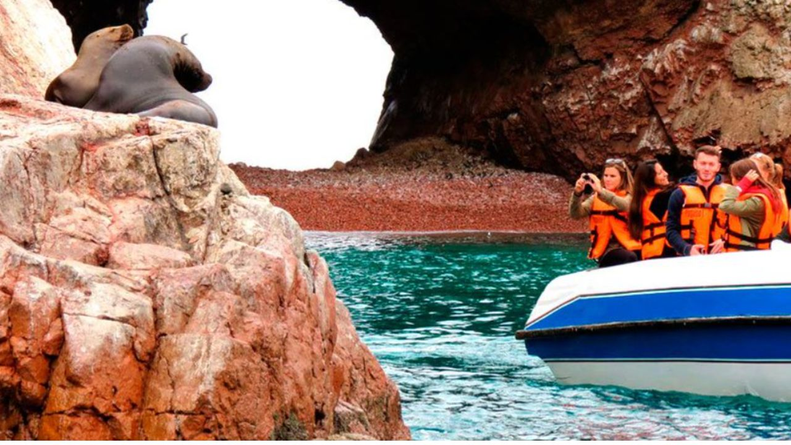
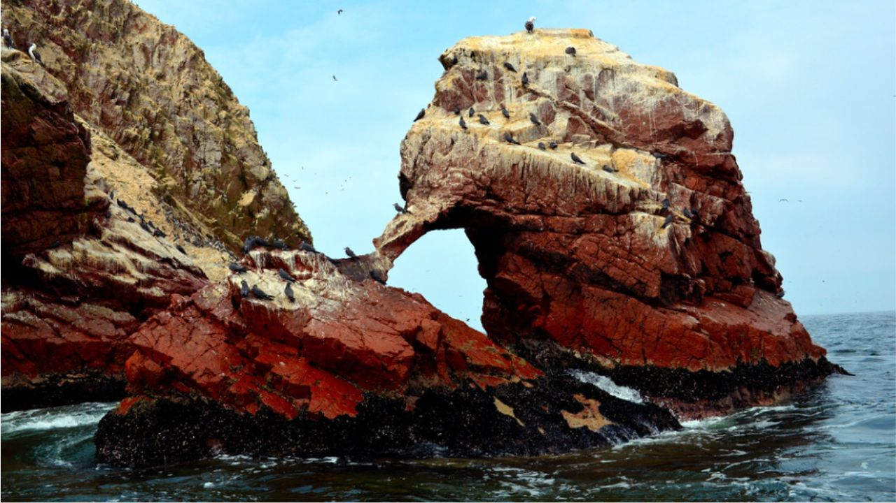
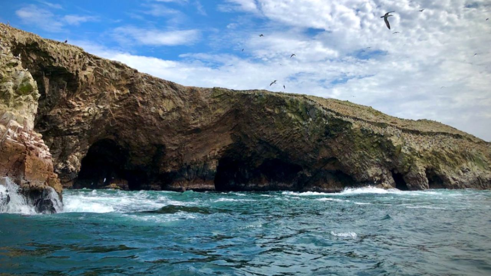

Excursión en Costa a las Islas Ballestas



Una Aventura Marina Inolvidable
Desde el terminal de cruceros TPP Pisco Paracas
Detalle
Te recogemos directamente en el puerto y te acompañamos personalmente al muelle de Paracas. Este tour de ida y vuelta a las islas más famosas de Perú te permite disfrutar de magníficas formaciones rocosas esculpidas por la naturaleza y es hogar de pingüinos de Humboldt, lobos marinos sudamericanos y una multitud de aves marinas. Servicios también disponibles en Primera Clase y clases Privadas. Todos los tours en yate incluyen un yate certificado, registrado y tripulación/guía capacitado a bordo. Nuestros servicios de yate están asegurados y registrados con todas las agencias apropiadas según lo exige la ley.
Incluye:
- Limitado a 28 participantes
- Todas las entradas
- Impuesto portuario
- Seguro personal en caso de lesiones
- Recojo y regreso directamente desde el puerto.
- Todo el transporte
- Guía de habla inglesa/hispana
No Incluye:
- Extras y propinas.
09:00AM
Recojo del puerto San Martín
09:30AM
Llegada a la Ciudad de Paracas (muelle turístico).
10:00AM
Viaje a las Islas Ballestas. El tour dura 2 horas. Veremos aves marinas, lobos marinos, pingüinos de Humboldt, el rayador inca y el enigmático geoglifo El Candelabro.
12:00PM
Regreso a la Ciudad de Paracas. Tiempo libre para caminar por el boulevard de Paracas, comprar o tomar Pisco Sour.
01:00PM
Salida a la Reserva Natural de Paracas. Este tour dura 2 horas, tendremos una caminata corta en el desierto más seco de Paracas y paradas para fotos en la dramática costa rocosa.
03:00PM
Regreso al crucero. Fin de nuestros servicios.
Servicio de Cruceros 2025
- Agosto 29. → CORAL PRINCESS / Princess Cruises
- Octubre 22. → MS ZAANDAM / Holland America
- Noviembre 28. → MS OOSTERDAM / Holland America
- Diciembre 15. → SAPPHIRE PRINCESS / Princess Cruises
- Diciembre 19. → OCEANIA MARINA / Oceania Cruises
- Diciembre 20. → CELEBRITY ECLIPSE / Celebrity Cruises
- Diciembre 21. → SEVEN SEAS SPLENDOR / Regent Seven Seas
- Enero 17, 2026. → SILVER NOVA / Silver Sea
- Enero 17, 2026. → NORWEGIAN SUN / Norwegian Cruise
- Enero 18, 2026. → SEABOURN QUEST / Seabourn
- Enero 28, 2026. → SERENADE OF THE SEAS / Royal Caribbean
- Febrero 26, 2026. → NORWEGIAN SUN / Norwegian Cruise
Precio:
100$
Reservar Ahora